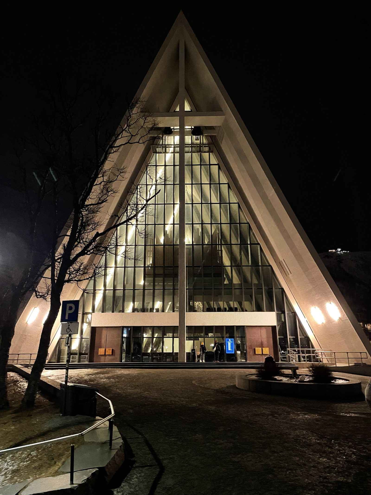
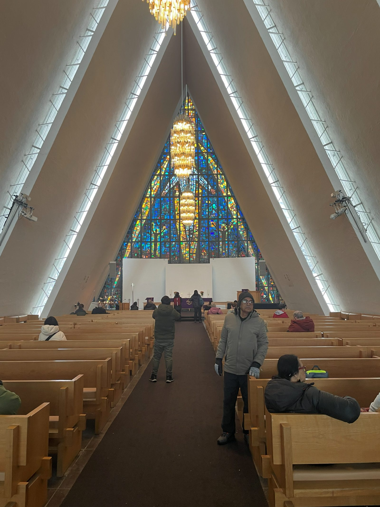
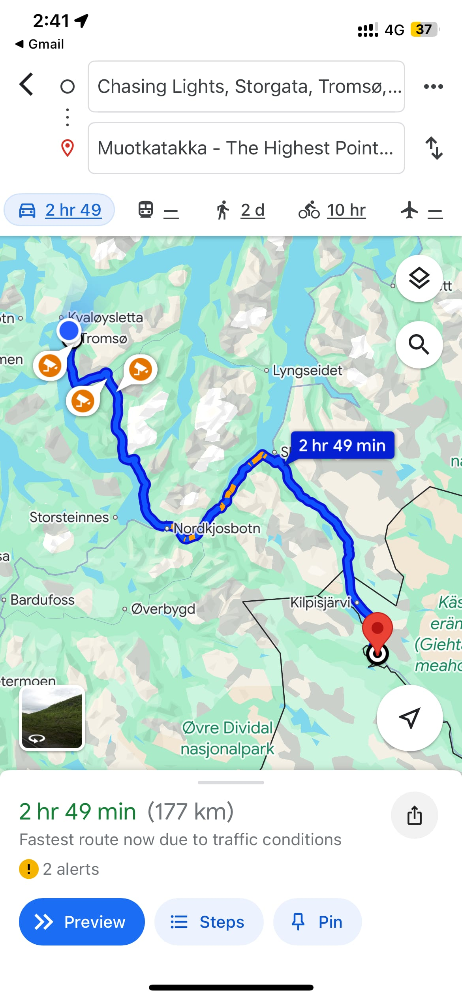

NORWAY
Friday
- Flight took off maybe 5 minutes late, not bad
- Landed at 6:10ish and took a bus to the Airbnb
- Talked to our host about groceries and what to do while we are here
- He suggested the cable car and we decided to do that
- We took a bus across the island and over the bridge to the cable car station and went up to the top of the mountain
-
1 / 3
- We walked to the Arctic Cathedral while we waited for the bus back

- Took the bus home at 11ish and slept by midnight
Saturday
- Slept in and showered before leaving at 10:40 for McDonald's
- Ate brunch at the northernmost McDonald's in the world
- Super expensive for a McDonald's (almost $20 for a medium meal)
- Walked to the Polar Museum and grabbed souvenirs on the way there
- Interesting artifacts from arctic expeditions back in the 1700s-1900s
- Ended with a cool story about Nansen and Johansen and their expedition towards the North Pole and their struggles trying to survive in the arctic
- Took a bus to the Arctic Cathedral to see it in the daytime and see the inside

- Walked back across the bridge to go towards Telegrafbukta
-
1 / 2
- Bussed back across the bridge for an early dinner at Bengt's Bistro
- Authentic Norwegian food
- I got a cod and bacon on top of mashed potatoes and carrots
- Better than I expected, Mahathi even tried it (without the bacon) and liked it
- Sweet Potato fries were good as well
- Tried a soda called Urge
- Looked it up, it's a Coca-Cola product only available in Norway
- It's successor, Surge, was/is available in USA and other places as Coca-Cola's version of Mtn Dew
- Bussed back towards the city and walked around before getting on the bus for the Northern Lights Chase

- Got to a parking lot at around 9:30 after like 5 minutes of looking at the lights while driving
-
1 / 3
- Got back in the bus after about two hours at the watching area and started our journey home at 11:38
Sunday
- Got up to go to the airport at 7:15 for our 10:10 flight
-
1 / 2
- Landed at 1:00 and went home